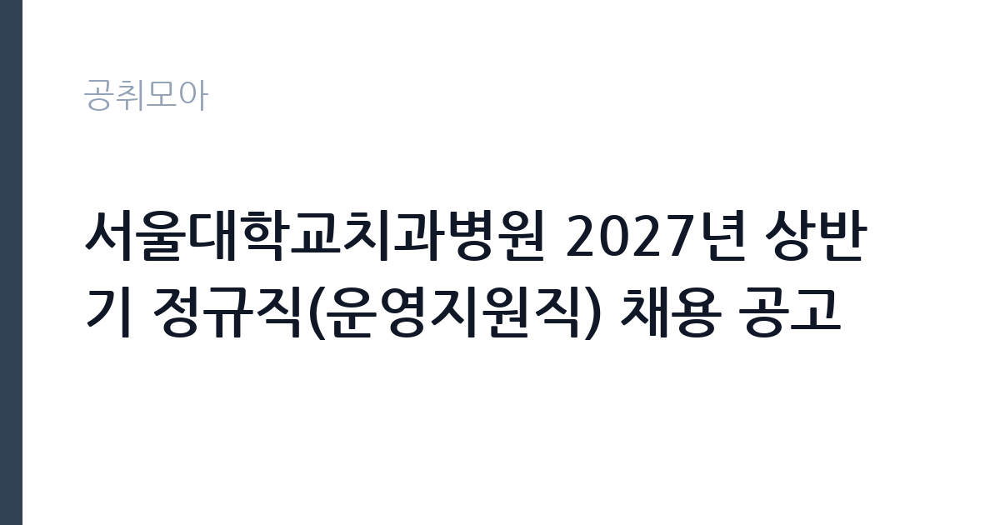

[공공기관] 서울대학교치과병원 2027년 상반기 정규직(운영지원직) 채용 공고
서울대학교치과병원 · 서울 · 마감 2026-11-18 (D-14) · 출처 잡알리오

한눈에 보는 모집 조건
| 기관 | 서울대학교치과병원 |
|---|---|
| 공고명 | 서울대학교치과병원 2027년 상반기 정규직(운영지원직) 채용 공고 |
| 고용형태 | 정규직 |
| 근무지 | 서울 |
| 게시일 | 2026-11-04 |
| 마감일 | 2026-11-18 (D-14) |
지원자격, 이렇게 읽으세요
- (미화, 보안) 자격제한 없음
- (시설) 소방설비산업기사 자격증 보유자(기계 또는 전기분야)
정규직 채용은 기간의 정함이 없는 근로계약을 전제로 합니다. 수습 기간을 두고 평가한 뒤 정규직으로 확정하는 절차가 일반적이며 기관의 인사 규정과 임금 체계를 적용받습니다. 이번 공고는 서울대학교치과병원이 직접 진행하는 자체 전형입니다. 분야별 자격 요건이 다릅니다. 미화와 보안은 자격 제한이 없고, 시설 분야는 소방설비산업기사 자격증을 기계 또는 전기 분야로 보유해야 합니다. 2027년 상반기 정규직 채용으로, 수습 기간을 거쳐 정규직으로 확정되는 절차를 밟습니다. 접수 마감은 2026년 11월 18일이며, 채용 절차와 제출서류는 병원 채용 사이트의 공고문을 기준으로 확인하십시오. 병원 근무이므로 결핵 등 건강검진과 감염 관리 교육 이수 절차가 따릅니다. 제출서류는 공고문에 적힌 순서대로 정리하면 담당자가 확인하기 쉽습니다. 자격 취득 예정자는 채용 공고의 예정자 허용 조항을 먼저 확인해야 합니다. 조항이 없으면 지원 자체가 반려될 수 있습니다. 경력 요건은 총 경력이 아니라 해당 직무 경력만 인정하는 경우가 있으니, 증명서의 직무 기술을 함께 확인하십시오. 이 공고 원문에 적힌 응시 조건 문구는 '(미화, 보안) 자격제한 없음' / '(시설) 소방설비산업기사 자격증 보유자(기계 또는 전기분야)'입니다. 문구를 그대로 읽고 본인 해당 여부를 하나씩 표시해 두면 서류 단계에서 탈락하는 일을 줄일 수 있습니다.
이 공고의 포인트
이 건은 서울대학교치과병원이 같은 시기에 낸 4개 모집분야 가운데 운영지원직(미화·보안·시설) 직무입니다. 다른 직무 공고와 요건이 다르므로 지원 전에 모집분야 표를 대조해야 합니다. 이 공고의 첫 번째 포인트는 고용 형태입니다. 수습 기간 평가를 통과하면 기간의 정함이 없는 신분이 되어 고용이 안정됩니다. 두 번째는 업무 범위가 명확하다는 점입니다. 운영지원직(미화·보안·시설) 직무로 채용되므로 배치 이후 담당 업무가 크게 흔들리지 않습니다. 세 번째는 근무지입니다. 서울 지역 근무로 접근성은 좋지만 그만큼 지원자가 몰리는 지역이므로 경쟁률을 넉넉히 잡아야 합니다. 채용 규모가 크지 않아 면접 비중이 높은 전형이 될 가능성이 있습니다. 선발 인원은 공고문에 명시되어 있으니 모집분야 항목을 함께 확인하십시오.
전형은 어떻게 진행되나
1차 서류, 2차 면접의 2단계로 진행되는 구성이 일반적입니다. 서류에서는 자격 요건과 경력 증빙을 확인하고, 면접에서는 실제 업무 수행 능력과 조직 적응을 봅니다. 직무에 따라 필기시험이나 실기, 컴퓨터 활용 시험이 추가되기도 하므로 공고문의 전형표를 먼저 확인하십시오. 단계별로 합격자만 다음 전형에 응시할 수 있고, 단계마다 응시 자격 확인 서류를 다시 제출해야 하는 경우가 있습니다. 최종합격자 발표 후에는 신원조회와 채용 신체검사가 남아 있습니다. 전형 일정이 공고문에 날짜로 명시되어 있으니 달력에 옮겨 두고 준비하십시오.
원문에서 확인한 전형 방식
(미화, 보안) 자격제한 없음 (시설) 소방설비산업기사 자격증 보유자(기계 또는 전기분야)
이런 분께 추천해요
- 지원 분야의 자격·경력 요건을 충족하는 분
- 병원 환경에서 감염 관리 규정을 지킬 수 있는 분
- 야간·교대 근무를 수용할 수 있는 분
지원 전 체크리스트
- 응시자격 요건과 경력 기준을 충족하는가 — 경력은 증명서로 입증해야 합니다
- 수습 기간과 정규직 전환 조건을 확인했는가
- 제출서류 목록을 모두 준비했는가 — 누락 시 서류 단계에서 탈락합니다
- 접수 마감 2026-11-18 이전에 접수 방식을 확인해 제출했는가
모집 일정과 제출 타이밍
2026-11-04에 공고가 올라왔고 접수는 2026-11-18까지입니다. 남은 기간은 14일이며, 이 기간에 자격증 사본과 경력증명서, 주민등록등본 같은 기본 서류를 모두 준비해야 합니다. 경력증명서는 발급에 며칠이 걸리는 경우가 있으니 가장 먼저 신청하십시오. 접수는 온라인과 우편·방문으로 나뉘는 경우가 많고, 우편 접수는 도착 기준으로 판정되므로 마감일 소인만 믿으면 안 됩니다. 면접 일정은 서류 발표 후 개별 통보되므로 제출 후에도 연락을 받을 수 있도록 유지해야 합니다. 공휴일이 끼어 있으면 증명서 발급이 늦어질 수 있으니 발급 일정을 앞당기십시오.
직무 이해하기: 공공기관
서울대학교치과병원 운영지원직은 미화, 보안, 시설 분야로 나뉘어 채용됩니다. 미화는 진료실과 병동, 화장실, 공용 구역을 정해진 주기로 청소하고 의료폐기물을 절차에 따라 처리합니다. 보안은 출입 통제와 순찰, 방문자 안내, 주차 관리를 맡고 야간 근무가 포함됩니다. 시설은 건물의 기계·전기·소방 설비를 점검하고 고장을 처리합니다. 병원 특성상 감염 관리 규정과 개인정보 보호 규정을 함께 지켜야 합니다. 직무 교육은 입사 후 기관 자체 계획에 따라 진행되므로 사전 경험이 없어도 시작할 수 있습니다.
자기소개서 작성 팁
지원서는 세 분야 중 어디에 지원했는지를 첫 문단에 분명히 쓰는 것이 중요합니다. 같은 공고라도 분야별 평가 기준이 달라 지원 분야가 드러나지 않으면 준비도가 낮게 보입니다. 미화·보안은 시설 관리나 순찰, 청소 업무 경험을 구체적으로 쓰고, 시설은 자격과 설비 점검 경력을 앞세우십시오. 정규직 전환이 있는 채용이므로 장기 근무 의사를 밝히면 좋습니다. 구성은 지원 동기, 직무 경험, 기여 방안 순서가 무난합니다. 지원 동기는 서울대학교치과병원의 사업 중 본인이 관심을 가진 부분을 한 가지로 좁혀 서술하고 추상적인 표현은 줄이십시오. 직무 경험은 담당했던 업무와 규모, 결과를 수치로 제시하면 설득력이 올라갑니다. 기여 방안은 입사 후 첫 3개월과 1년 계획으로 나눠 쓰면 준비도가 드러납니다.
면접 준비 포인트
면접에서는 지원 분야의 실무와 안전 의식을 확인합니다. 미화라면 감염 관리와 의료폐기물 처리 절차를 아는지, 보안이라면 야간 순찰 중 이상 상황을 어떻게 처리할지 묻습니다. 시설이라면 소방 설비 점검 주기와 고장 대응 순서를 구체적으로 답하십시오. 병원이라는 환경에서 환자와 보호자를 마주치므로 응대 태도도 평가에 포함됩니다. 모르는 질문에 추측으로 답하면 감점 요인이 되므로, 확인 후 답하겠다고 밝히는 편이 안전합니다. 직무 특성상 체력이나 근무 시간에 대한 질문이 나올 수 있으므로 솔직하게 답하고 관리 계획을 함께 제시하십시오.
급여·근무조건 읽는 법
서울대학교치과병원은 자체 임금 규정을 적용하는 공공 의료기관입니다. 정규직으로 채용되면 직군별 임금표에 따라 기본급이 정해지고, 수당과 성과급이 더해지며 호봉이 오르면 임금이 조정됩니다. 수습 기간에는 별도 기준이 적용될 수 있으므로 공고문의 처우 항목을 확인하십시오. 확인되지 않은 금액은 이 글에서 제시하지 않습니다. 2026년 적용 최저임금은 시급 10,320원, 월 환산 2,156,880원(주 40시간·209시간 기준)입니다. 고용노동부 고시 제2025-47호로 확정된 금액입니다. 공고문에 금액이 제시되지 않은 항목은 원문 보수표나 처우 설명에서 확인해야 하며 확인되지 않은 수치는 쓰지 않는 것이 원칙입니다. 비교할 때는 월 급여뿐 아니라 상여·명절휴가비·복지포인트·초과근무수당까지 포함한 연간 총액으로 계산하십시오. 기간제라면 계약 기간 동안의 총액을, 무기계약이라면 호봉 상승과 정년까지의 누적 소득을 기준으로 판단하는 편이 정확합니다.
자주 묻는 질문
- 선발 인원은 몇 명인가요?
공고문의 모집분야 항목에 직종별 인원이 표로 제시되어 있습니다. 첨부된 공고문 원문에서 확인하십시오. - 근무지는 어디인가요?
서울 지역의 서울대학교치과병원 소속 근무지입니다. 세부 주소와 출퇴근 조건은 원문 공고문에서 확인할 수 있습니다. - 보수는 얼마인가요?
채용 신분(정규직)과 기관 임금 규정에 따라 정해지며 구체적인 금액은 공고문 처우 항목에 제시됩니다. 금액이 공개되지 않은 경우에는 원문의 보수표를 확인하십시오.
함께 보면 좋은 공고
[공공기관] 한국농어촌공사 영산강사업단 공무직(청소원) 보훈 장애 제한경쟁 채용공고 — 마감 2026-11-20[공공기관] 2027년 1차 박사후연수연구원, 석사후연수연구원 및 위촉연구원 공개채용 — 마감 2026-11-20[공공기관] 서울대학교치과병원 2027년 상반기 정규직(원무직) 채용 공고 — 마감 2026-11-18출처: 잡알리오 공개정보를 바탕으로 공취모아가 정리한 안내글입니다. 모집 조건·일정은 변경될 수 있으니 지원 전 반드시 원문 공고문을 확인하세요. 본 글은 정보 제공용이며 합격을 보장하지 않습니다.